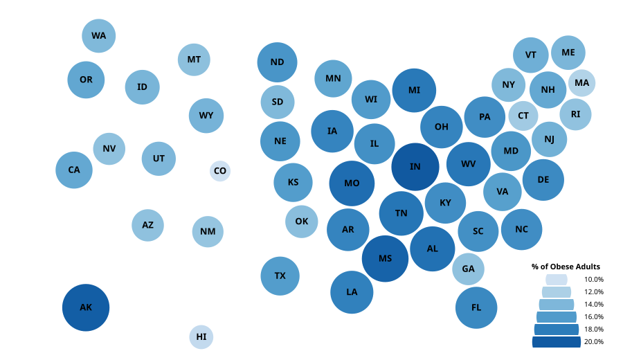

Using Vega with Multiple Data Sources
Dorling Cartogram
From Vega Dorling Cartogram Example
using Vega, VegaDatasets, URIParser
uri = URI("https://raw.githubusercontent.com/vega/vega-datasets/master/data/us-10m.json")
vg"""{
"width": 900,
"height": 520,
"autosize": "none",
"config": {
"legend": {
"gradientDirection": "horizontal",
"gradientLength": 120,
"gradientThickness": 10
}
},
"data": [
{
"name": "states",
"format": {"type": "topojson", "feature": "states"}
},
{
"name": "obesity",
"transform": [
{
"type": "lookup",
"from": "states", "key": "id",
"fields": ["id"], "as": ["geo"]
},
{
"type": "filter",
"expr": "datum.geo"
},
{
"type": "formula", "as": "centroid",
"expr": "geoCentroid('projection', datum.geo)"
}
]
}
],
"projections": [
{
"name": "projection",
"type": "albersUsa",
"scale": 1100,
"translate": [{"signal": "width / 2"}, {"signal": "height / 2"}]
}
],
"scales": [
{
"name": "size",
"domain": {"data": "obesity", "field": "rate"},
"zero": false,
"range": [1000, 5000]
},
{
"name": "color",
"type": "linear",
"nice": true,
"domain": {"data": "obesity", "field": "rate"},
"range": "ramp"
}
],
"legends": [
{
"title": "% of Obese Adults",
"orient": "bottom-right",
"type": "symbol",
"size": "size",
"fill": "color",
"format": ".1%",
"clipHeight": 16
}
],
"marks": [
{
"name": "circles",
"type": "symbol",
"from": {"data": "obesity"},
"encode": {
"enter": {
"size": {"scale": "size", "field": "rate"},
"fill": {"scale": "color", "field": "rate"},
"stroke": {"value": "white"},
"strokeWidth": {"value": 1.5},
"x": {"field": "centroid[0]"},
"y": {"field": "centroid[1]"},
"tooltip": {"signal": "'Obesity Rate: ' + format(datum.rate, '.1%')"}
}
},
"transform": [
{
"type": "force",
"static": true,
"forces": [
{"force": "collide", "radius": {"expr": "1 + sqrt(datum.size) / 2"}},
{"force": "x", "x": "datum.centroid[0]"},
{"force": "y", "y": "datum.centroid[1]"}
]
}
]
},
{
"type": "text",
"interactive": false,
"from": {"data": "circles"},
"encode": {
"enter": {
"align": {"value": "center"},
"baseline": {"value": "middle"},
"fontSize": {"value": 13},
"fontWeight": {"value": "bold"},
"text": {"field": "datum.state"}
},
"update": {
"x": {"field": "x"},
"y": {"field": "y"}
}
}
}
]
}"""(uri, "states")(dataset("obesity"), "obesity")